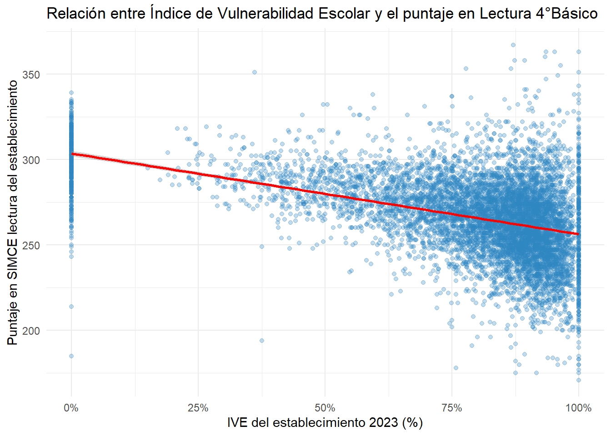

Warning: Using `size` aesthetic for lines was deprecated in ggplot2 3.4.0.
i Please use `linewidth` instead.Warning: The dot-dot notation (`..density..`) was deprecated in ggplot2 3.4.0.
i Please use `after_stat(density)` instead.Este proyecto tiene como objetivo analizar el desempeño en lectura de los y las estudiantes de 4° Básico en el SIMCE 2023 a nivel de escuela, en relación con diversas variables socioeconómicas y demográficas del establecimiento. A través del uso de técnicas de Machine Learning, se busca identificar patrones y analizar el rendimiento de las escuelas considerando factores como la dependencia administrativa (público, privado, subvencionado), el índice de ruralidad, el grupo socioeconómico (GSE), el índice de vulnerabilidad escolar (IVE-SINAE) y el nivel educativo promedio de los padres.
En este análisis se explorará el uso de árboles de decisión y Random Forest como herramientas principales de modelado para identificar factores asociados al desempeño en lectura a nivel escolar.
El análisis se basará en base de datos de la Agencia de la Calidad de la Educación y JUNAEB, que incluye las siguientes variables :
Los modelos serán evaluados con métricas como:
Para garantizar la reproducibilidad y replicabilidad del análisis, el proyecto seguirá buenas prácticas en ciencia de datos:
1.1 Para la carga y exploración inicial de los datos, se utilizarán las siguientes:
library(tidyverse)
library(readr)
library(janitor)
library(skimr)
library(here)1.2 Se abre la base de datos de acceso público de la Agencia de Calidad de la Educación que contiene los puntajes de lectura de 4°Básico por establecimiento:
ruta <- here("simce4b2023_rbd_público_final.xlsx")
simce_data <- readxl::read_excel(ruta) %>%
clean_names()
invisible(head(simce_data))
invisible(glimpse(simce_data))
invisible(skim(simce_data))1.3 Posteriormente, se visualizan los nombres de las variables en esta base de datos:
nombres_columnas <- colnames(simce_data)
valores_unicos <- simce_data %>%
select(rbd, cod_depe2, cod_grupo, cod_rural_rbd, prom_lect4b_rbd,
palu_eda_ins_lect4b_rbd, palu_eda_ele_lect4b_rbd, palu_eda_ade_lect4b_rbd) %>%
summarise_all(n_distinct)
valores_faltantes <- simce_data %>%
select(rbd, cod_depe2, cod_grupo, cod_rural_rbd, prom_lect4b_rbd,
palu_eda_ins_lect4b_rbd, palu_eda_ele_lect4b_rbd, palu_eda_ade_lect4b_rbd) %>%
summarise_all(~sum(is.na(.)))De esta base de datos, se utilizarán las siguientes variables
Estas variables serán utilizadas para explorar la relación entre el desempeño en lectura de los establecimientos y sus características socioeconómicas y estructurales.Por lo tanto, se crea una nueva dataset para facilidar el análisis y posterior pegado a la base de datos de JUNAEB.
# Se crea un nuevo data frame con las variables relevantes
simce_ok <- simce_data %>%
select(rbd, cod_depe2, cod_grupo, cod_rural_rbd, prom_lect4b_rbd,
palu_eda_ins_lect4b_rbd, palu_eda_ele_lect4b_rbd, palu_eda_ade_lect4b_rbd)
# Se ejecuta
invisible(head(simce_ok))
invisible(glimpse(simce_ok))
1.4 Se abre y explora la Base de Datos sobre Índice de Vulnerabilidad Estudiantil (IVE) perteneciente a la JUNAEB y se exploran sus variables.
library(readxl)
ive_data <- read_excel(here("IVE_2023.xlsx")) %>%
clean_names()
estructura_ive <- glimpse(ive_data)1.5 Finalmente, se unen la variable IVE a la base de datos Simce y se limpia para proceder a los análisis. Debido a que no se mide el Índice de Vulnerabilidad de los colegios particulares pagados, se les ha asignado 0 en esta variable para no ser eliminados del análisis.
# Se selecciona la variable IVE
ive_simple <- ive_data %>%
select(id_rbd, ive_2023)
# Se une a la base Simce
data_simce_ive <- left_join(simce_ok, ive_simple, by = c("rbd" = "id_rbd"))
# Se asigna 0 IVE a los colegios particulares pagados
data_simce_ive <- data_simce_ive %>%
mutate(ive_2023 = if_else(cod_depe2 == 3 & is.na(ive_2023), 0, ive_2023))
# Se limpian los NA
data_simce_ive_ok <- data_simce_ive %>%
drop_na(prom_lect4b_rbd, cod_grupo, palu_eda_ins_lect4b_rbd,
palu_eda_ele_lect4b_rbd, palu_eda_ade_lect4b_rbd)
nrow(data_simce_ive_ok)Se analiza la distribución del puntaje promedio de lectura (SIMCE) en 4° Básico para conocer su comportamiento general.
Warning: Using `size` aesthetic for lines was deprecated in ggplot2 3.4.0.
i Please use `linewidth` instead.Warning: The dot-dot notation (`..density..`) was deprecated in ggplot2 3.4.0.
i Please use `after_stat(density)` instead.Se visualiza la distribución del puntaje promedio en lectura según el grupo socioeconómico (GSE) del establecimiento:
Se visualiza la distribución del puntaje promedio en lectura según la dependencia administrativa del establecimiento.
1 2 3 4
3224 4135 481 450 Se visualiza la relación entre el Índice de Vulnerabilidad Escolar y el puntaje promedio SIMCE 2023 en lectura para 4° Básico por establecimiento. Se puede observar una tendencia negativa, en la que a mayor vulnerabilidad, menor desempeño en el promedio Simce en Lectura por escuela.
Attaching package: 'scales'The following object is masked from 'package:purrr':
discardThe following object is masked from 'package:readr':
col_factor`geom_smooth()` using formula = 'y ~ x'
Se visualiza cómo varían el porcentajes de estudiantes con desempeño insuficiente, elemental y adecuado de cada establecimiento según su índice de vulnerabilidad escolar (IVE).
`geom_smooth()` using formula = 'y ~ x'En esta sección se utiliza un árbol de regresión para identificar patrones en las variables predictoras que explican el puntaje promedio de lectura SIMCE en los cuártos básicos de cada establecimiento.

Interpretación
El árbol indica cómo influye la variable de grupo socioeconómico (cod_grupo) y el índice de vulnerabilidad (ive_2023) en los puntajes promedio SIMCE Lectura de 4° Básico por establecimiento. Se determina que el grupo socioeconómico es la variable más determinante. Establecimientos con grupo socioeconómico inferior a 4 (medio alto) tienen puntajes más bajos en promedio (262 puntos). Dentro de estos, los establecimientos con un grupo socioeconómico aún más bajo (menor al grupo medio) tienen puntajes más bajos (257 puntos). Los colegios pertenecientes a un grupo socioeconómico igual al medio logran puntajes intermedios (269 puntos). Por otro lado, establecimientos con grupo socioeconómico igual superior a 4 (medio alto) tienen puntajes más altos en promedio (286 puntos). En relación al grupo socioeconómico, la otra variable relevante es el índice de vulnerabilidad (IVE). Aquellos establecimientos con IVE más alto (igual o mayor al 37% de vulnerabilidad) obtienen puntajes ligeramente más bajos (281 puntos) comparados con aquellos que tienen un IVE menor a 37% (297 puntos). Este resultado confirma que el nivel socioeconómico del establecimiento es un factor clave en el desempeño en lectura, seguido por la vulnerabilidad escolar.
randomForest 4.7-1.1Type rfNews() to see new features/changes/bug fixes.
Attaching package: 'randomForest'The following object is masked from 'package:dplyr':
combineThe following object is masked from 'package:ggplot2':
margin
Call:
randomForest(formula = prom_lect4b_rbd ~ cod_depe2 + cod_grupo + cod_rural_rbd + ive_2023, data = data_simce_ive_ok, importance = TRUE, ntree = 500)
Type of random forest: regression
Number of trees: 500
No. of variables tried at each split: 1
Mean of squared residuals: 435.7918
% Var explained: 24.64 %IncMSE IncNodePurity
cod_depe2 16.45373 125884.87
cod_grupo 34.89973 466746.39
cod_rural_rbd 26.17569 48462.65
ive_2023 24.65030 441116.28Interpretación
El modelo Random Forest muestra que las variables que más influyen en la predicción del puntaje SIMCE de lectura (4° Básico) son, en orden de importancia:
Este análisis confirma la fuerte relación entre condiciones socioeconómicas y vulnerabilidad escolar con el rendimiento académico en lectura.
# Predicciones del modelo Random Forest
pred_rf <- predict(rf_simce, data_simce_ive_ok)
# R²
r2_rf <- cor(pred_rf, data_simce_ive_ok$prom_lect4b_rbd)^2
r2_rf[1] 0.2720776
# RMSE
rmse_rf <- sqrt(mean((pred_rf - data_simce_ive_ok$prom_lect4b_rbd)^2))
rmse_rf[1] 20.66282
R² = 0.27 indica que el modelo Random Forest explica aproximadamente un 27% de la variabilidad observada en los puntajes SIMCE en Lectura. Esto se considera un valor moderado, indicando que el modelo es útil, aunque existen otros factores no incluidos que influyen en el rendimiento académico en lectura.
RMSE = 20.66 indica que en promedio, las predicciones del puntaje SIMCE hechas por el modelo se desvían en aproximadamente 20.7 puntos del valor real. Considerando la escala de puntajes SIMCE (habitualmente entre 200 y 350 puntos), este error indica una precisión aceptable, pero mejorable.
En síntesis, el modelo tiene una capacidad moderada para predecir puntajes SIMCE de lectura de las escuelas, señalando que los factores considerados son relevantes, pero también existen otras variables influyentes no incorporadas.
Para finalizar, se puede concluir que las variables que mejor explican los resultados del puntaje SIMCE en Lectura (4° Básico) son, principalmente, el grupo socioeconómico y el índice de vulnerabilidad escolar, por lo que es posible confirmar que el contexto socioeconómico del establecimiento es determinante en el desempeño académico en lectura.
El modelo de Random Forest logró explicar un 27% de la variabilidad de los puntajes observados, con un error promedio (RMSE) de aproximadamente 20.7 puntos en las predicciones. Esto indica un desempeño predictivo aceptable, aunque limitado, lo que sugiere la existencia de otras variables no consideradas en este estudio que influyen en los resultados académicos.
Se recomienda para estudios futuros integrar variables adicionales relacionadas con, por ejemplo, prácticas pedagógicas, liderazgo escolar o características familiares de los estudiantes, con el objetivo de mejorar la capacidad predictiva y profundizar en los factores que determinan los resultados educativos.